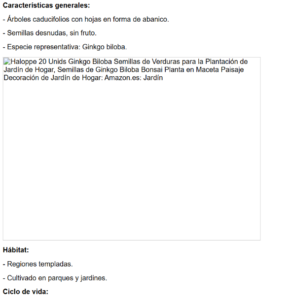

Pteridofitos Helechos
Pteridofitos (Helechos)
Características generales:
• Plantas vasculares sin semillas, con hojas grandes llamadas frondes.
• Presentan rizomas subterráneos y raíces verdaderas.
• Reproducción por esporas en soros bajo las frondes.
• Carecen de flores y semillas.
Hábitat:
• Ambientes húmedos y sombreados, bosques tropicales y templados.
• Algunas especies acuáticas.
Ciclo de vida:
• Alternancia de generaciones: gametofito (prótalo) pequeño y fotosintético.
• Esporofito dominante con frondes y soros productores de esporas.
• Fecundación dependiente del agua.
Ficha elaborada por Carlos – Feria Educativa 20/10/2025
